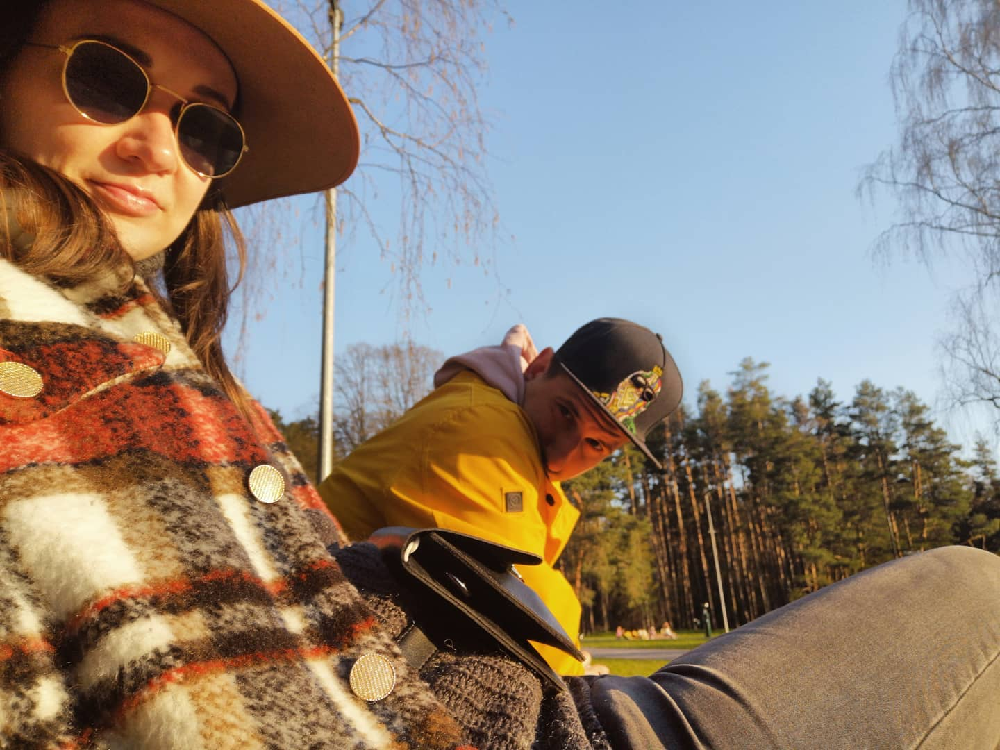

Esu Ieva. Gimusi kiek neįprastą dieną, dėl kurios ilgus metus pykdavau ant tėvų - Gruodžio 25d. (Jei paklausi, gaunu dvi dovanas nuo artimiausių žmonių, ne tik Kalėdinę..) Po visų klajonių po užsienį (Gyvenau Amerikoje, Čekijoje, Ispanijoje) ir Lietuvos didžiausius miestus, grįžau į gimtajį miestą - Klaipėdą.
Nors turbūt pusę gyvenimo mane traukė link menų, pabaigiau Kauno Technologijos Universitetą - Viešosios politikos mokslų Bakalaurą. Stengiausi nesėdėti vietoje ir judėti pirmyn - taip susiradau pusmečio praktiką Madride- Jungtinių tautų Pasaulio Turizmo Organizacijoje bet supratau, kad Lietuvva šaukia ir grįžau į Vilnių.
Turių draugą, kuris yra viena iš priežasčių kodėl persikėliau gyventi į Klaipėda.:))
Turbūt viena labiausiai įstrigusių istorijų, kad pirmas Tinerio pasimatymas buvo suplanuotas nuvažiuoti su dviračiais Klaipėda-Juodkrantė- Klaipėda. Pavalgius Juodkrantėje vakarienę apie 19h susiruošėm važiuoti atgal į Klaipėdą, tik staiga pastebėjau,kad mano dviračio padanga kiaura, o niekas tokiu metu jau nebedirba. Pasižiūrėjus, kad vaikinas kaip ir normalus ir ne freakas, nusprendžiau pareiti kartu namo - 25km... Mūsų pirmas pasimatymas truko apie 10h...:) Nuo to pasimatymo vis dar kalbam ir jau du metus draugaujame!
Mano pagrindinis hobis yra dviračiai. Pirmas dviratis buvo Merida plentinukas nupirktas už 190EU. Mylėjau, bet teko atsisveikinti, nes norėjosi geresnio.. bet va ir į pliusą išėjau, nes pardaviau už 300 EU kažkur, kadangi praeitą vasarą dėl covido buvo dviračių stiprus deficitas. Norėtųsi šiais metais daugiau kilometrų susukti ir ne vieną 100-tuką km pravažiuoti
P.S. Žinau,kad čia turbūt nepasiteisinimas, bet ketvirtadienį per paskaitą mano močiutė mirė, tai visas savaitgalis buvo skirtas laidotuvėms. Padariau namų darbus,kad tik kažką greit sukurti..:) pasitaisysiu sekantį kartą kažką originaliau.